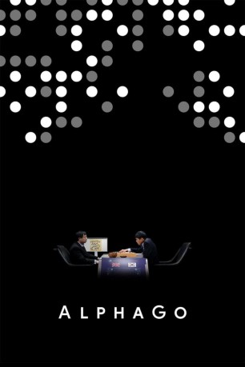

#8284 AlphaGo *OmU*
 gesehen am 20.02.2018
gesehen am 20.02.2018
 
 IMDB-Wertung: 7.9 / 10
IMDB-Wertung: 7.9 / 10  Metascore: 0
Metascore: 0 
With more board configurations than there are atoms in the observable universe, the ancient Chinese game of 'Go' has long been considered a grand challenge for artificial intelligence. On March 9, 2016, the worlds of Go and artificial intelligence collided in South Korea for an extraordinary best-of-five-game competition, coined the Google DeepMind Challenge Match. Hundreds of millions of people around the world watched as a legendary Go master took on an unproven AI challenger for the first time in history. Directed by Greg Kohs with an original score by Academy Award nominee, Hauschka, AlphaGo chronicles a journey from the halls of Cambridge, through the backstreets of Bordeaux, past the coding terminals of DeepMind in London, and, ultimately, to the seven-day tournament in Seoul. As the drama unfolds, more questions emerge: What can artificial intelligence reveal about a 3000-year-old game? What can it teach us about humanity?
Jahr: 2017
Dauer: 90 Minuten
FSK:
Land: USA Studio: Moxie PicturesTonspuren:
Untertitel: Englisch, , Deutsch, Französisch, ,
Auflösung: 1080p (1920x1080) Größe: 3389 MB
Genre: Dokumentation
Regisseur: Greg Kohs
Drehbuch: Moxie Pictures
Soundtrack: Volker Bertelmann
Darsteller:
- Ioannis Antonoglou als Himself
- Lucas Baker als Himself
- Nick Bostrom als Himself
- Yoo Changhyuk als Himself
- Nam Chi-Hyung als Herself
- Hyeyeon Cho als Herself
- Joseph Choi als Himself
- John Daugman als Himself
- Chris Garlock als Himself
- Thore Graepel als Himself
- Arthur Guez als Himself
- Demis Hassabis als Himself
- John Holmes als Himself
- Aja Huang als Himself
- Fan Hui als Himself
- Lee Hyunwook als Himself
- Andrew Jackson als Himself
- Mike Johnson als Himself
- Janice Kim als Herself
- Myungwan Kim als Himself
- Master Kwon als Himself
- Frank Lantz als Himself
- Maddy Leach als Herself
- Hajin Lee als Herself
- Lee-Soyong als Himself
- Shane Legg als Himself
- Fei-Fei Li als Herself
- Chris Maddison als Himself
- Cade Metz als Himself
- Vedavyas Panneershelvam als Himself
- Michael Redmond als Himself
- Martin Rees als Himself
- Julian Schrittwieser als Himself
- Lee Sedol als Himself
- Hong Seok-Hyun als Himself
- Kim Seongryong als Himself
- Laurent Sifre als Himself
- David Silver als Himself
- Song Taegon als Himself
- George van den Driessche als Himself
- Jeong Yoojeong als Himself
- Yuan Zhou als Himself
Datei: X:\Dokumentationen\Internet+Science\AlphaGo OmU (2017, FSK, 1920x1080).mkv seit 20.02.2018
Festplatte: HD Serien(SU-Z)+Dokus+Musik
 Es gibt insgesamt 25 Filme in der Gruppe 'Dokumentationen\Internet+Science'
Es gibt insgesamt 25 Filme in der Gruppe 'Dokumentationen\Internet+Science'